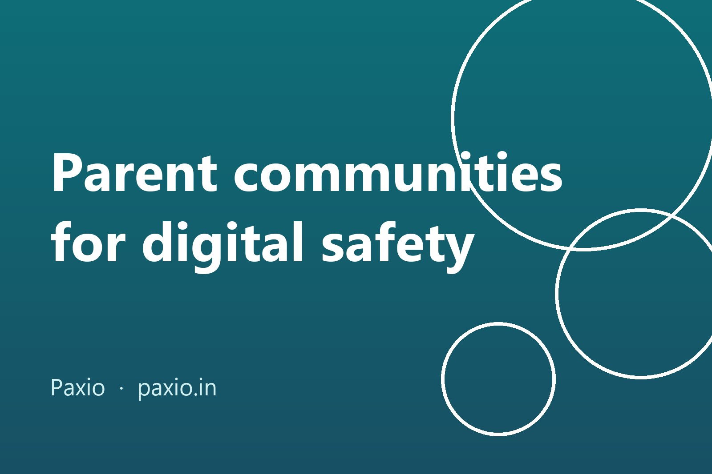

You’re up at night wondering if the hour on YouTube is too much, whether that game chat is safe, and when a first phone is fair. The honest answer to most of this is “it depends on your child”, which is exactly why other parents help. A good community gives you ideas, context and the relief of hearing you’re not the only one. A bad one gives you panic. Here is how to tell the difference.
Disclosure: we build Paxio, a parental control app. This guide is about people and communities, and none of the groups below are paid placements.
Technology moves faster than any single parent can follow. A new app, a new game mode or a new school platform can show up between one parent-teacher meeting and the next. Other parents are often the first to notice, and they can tell you what the change looked like in a real house with a real child.
They also lower the pressure. “Everyone else has it” is a heavy argument at ten years old. Hearing that half the class’s parents are holding the same line makes it easier to hold yours.
Before you join, scroll the last ten posts and ask:
Specific questions get better answers than “how much screen time is okay?”. Try these:
For the app itself, don’t rely on a group’s opinion alone. Our free App Checker shows a Play Store app’s permissions, ads, age rating and privacy policy in one place, so the discussion starts from facts.
A group can tell you what other families do. It can’t know your child. Use it for ideas, then talk to your own child, because the most useful safety habit is a kid who tells you when something odd happens. Our post on where to start with digital literacy covers how to open those conversations.
Tools can handle the routine part so the conversation stays about trust. With Paxio, Screen Time Limit and App Blocking let you enforce what your family agreed, without having to nag. The agreement itself still comes from you, ideally with your child.
There isn't one best group. A good one has a moderator, clear rules against shaming, and members who share what worked for their own family instead of selling one answer. Try an expert-led nonprofit resource, your child's school parent group, and one small group of friends, then keep the ones that make you calmer and better informed.
They're useful for local, practical questions, such as which app a class is using this term. They're unreliable for rules of thumb, because advice is often one family's experience stated as fact. Check anything important, such as a scary viral warning, against a primary source before acting or forwarding it.
Ask the school or parent association whether a slot at a regular meeting is possible, then keep it small. Pick one topic per session, such as screen time or a game your children all play, agree a no-shaming rule, and end with one thing each family will try this week.